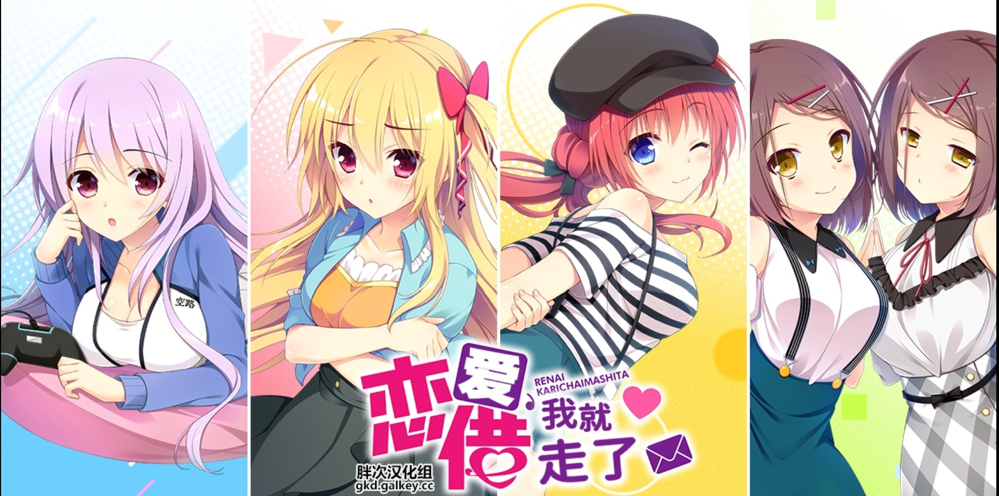

恋爱，我就借走了 恋爱，我借走了》（日语：恋愛、借りちゃいました）是ASaProject在2019年7月26日发售的恋爱冒险类型成人游戏。2019年11月29日与2020年1月31日发售两部Fandisc 2019-12-09 azto233  由于双亲突然失踪，还是高中生的新海幸必须拼命打工养活自己跟妹妹。某天正当幸烦恼著该如何赚更多钱时，突然看到“租赁人才派遣”的征人广告，幸虽然觉得可疑，但仍旧姑且一试，而他却没想到自己所接洽的对象都是曾经见过面的人